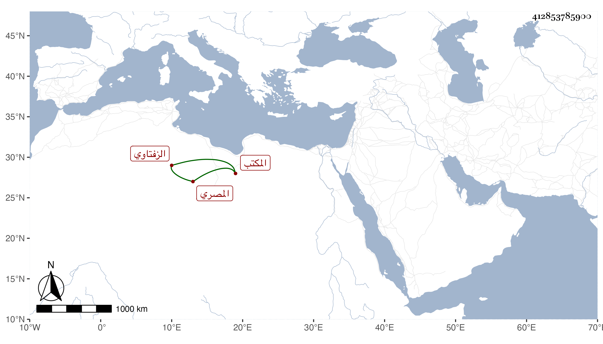

0902Sakhawi.DawLamic.ITO20230111-ara1.EIS1600.412853785900
Biography ID: 412853785900
46
محمد بن أحمد بن علي أبو علي الزفتاوي ثم المصري المكتب . ولد في سنة خمسين وسبعمائة وسمع على خليل بن طرنطاى الصحيح وتعانى الكتابة وأخذها عن الشمس محمد بن علي بن أبي رقيبة فبرع ، وصنف في أوضاع الخط كتابا سماه منهاج الإصابة في أوضاع الكتابة ، وانتفع به المصريون في تجويد الخط وصار غاية في معرفة الخطوط المنسوبة لا يرى خطا منها إلا ويعرف الذي كتبه لا يلحق في معرفة ذلك ، وكان مع هذا حسن المحاضرة ممتع المذاكرة له ما جريات مطربة لا تمل مجالسته ، وممن تعلم منه الكتابة شيخنا وذكره في معجمه وقال لازمته مدة وتعلمت الخط المنسوب منه وناولني مصنفه المشار إليه . ومات في نصف المحرم سنة ست ، وقيل أنه كان يقول أنا أكتب المنسوب بذراع الحديد الذي يقاس به ، وتبعه المقريزي في عقوده .
